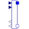
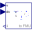
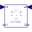

GeneralVoltageToCurrentAdaptorSignal adaptor for an Electrical OnePort with current and derivative of current as output and voltage and derivative of voltage as input (especially useful for FMUs) |

|
Information
This information is part of the Modelica Standard Library maintained by the Modelica Association.
Adaptor between an electrical openport and a signal representation of the oneport. This component is used to provide a pure signal interface around an Electrical model and export this model in form of an input/output block, especially as FMU (Functional Mock-up Unit). Examples of the usage of this adaptor are provided in Electrical.Analog.Examples.GenerationOfFMUs. This adaptor has voltage and derivative of voltage as input signals and current and derivative of current as output signal.
Note, the input signals must be consistent to each other (dv=der(v)).
Note, the adaptor contains no ground. Bear in mind that separating physical components and connecting them via adaptor signals requires to place appropriate ground components to define electric potential within the subcircuits.
Parameters (4)
| use_pder |
Value: true Type: Boolean Description: Use input for 1st derivative of potential |
|---|---|
| use_pder2 |
Value: false Type: Boolean Description: Use input for 2nd derivative of potential (only if 1st derivative is used, too) |
| use_fder |
Value: true Type: Boolean Description: Use output for 1st derivative of flow |
| use_fder2 |
Value: false Type: Boolean Description: Use output for 2nd derivative of flow (only if 1st derivative is used, too) |
Connectors (8)
| p |
Type: RealInput Description: Input for potential |
|
|---|---|---|
| pder |
Type: RealInput Description: Optional input for der(potential) |
|
| pder2 |
Type: RealInput Description: Optional input for der2(potential) |
|
| f |
Type: RealOutput Description: Output for flow |
|
| fder |
Type: RealOutput Description: Optional output for der(flow) |
|
| fder2 |
Type: RealOutput Description: Optional output for der2(flow) |
|
| pin_p |
Type: PositivePin |
|
| pin_n |
Type: NegativePin |
Used in Examples (2)
|
Modelica.Electrical.Analog.Examples Example to demonstrate variants to generate FMUs (Functional Mock-up Units) |
|
|
Modelica.Electrical.Analog.Examples Resonance circuits: example to demonstrate generation of FMUs (Functional Mock-up Units) |
Used in Components (3)
|  |
Modelica.Electrical.Analog.Examples.Utilities Input/output block of an inverse capacitor model |
|  |
Modelica.Electrical.Analog.Examples.Utilities Input/output block of a resistance model |
|
Modelica.Electrical.Analog.Examples.Utilities Input/output block of a direct inductor model |